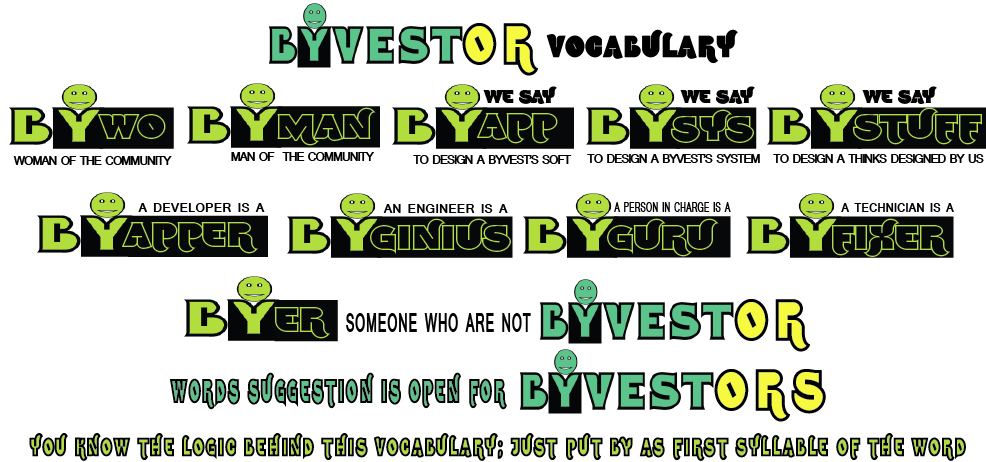

A Data-driven investor Structuring individual traders
Structured Products matter with Evolution Theory

It’s in 2016 and years before that I was interested in empowering individual traders who often with a single computer connected to the internet had access to the stock and options market. I was one of the earliest that thought that these online traders can be structured in funds like what one thought about ETFs and sincerely my interest in ETFs those days participated a lot in the production of this idea that got implemented by Etoro with the name of copy trade once I saw that I thought that they had stolen my ideas because I talked with key eToro’s executives we had both emails and phone conversations but our topic was first about a traction opportunity. They contacted me because I made 177 real persons open a demo Etoro account in just 2 days and I was sure that this system was and is still able to do it in a fewer duration and can make millions of real person open demo accounts. We talked about this and for convincing them I also showed them my idea about individual traders grouped in tradable funds. They just wanted me to join their affiliate program because they said that they said it was not clear how I arranged myself to get these 177 open demo account and they won’t see this deserve them badly as the public company. Remark that today Etoro is going public through a SPAC. They may be right about not working with me to implement this traction strategy I got but it curiously happens that Etoro launched soon Copy Trade a feature of their social trading platform that quite looks like this idea of structuring individual traders into funds like this picture below and like this landing page of those days.
Cash Code was the name I had because Developers were the core audience and empowering them my main goal like for this idea below had at that time.
Empowering developers, data scientists, and traders, is still my goal.
I could say just empowering people.
here, bellow, the trading engine wepredikt was running test in a ubuntu desktop terminal with an average of 19% return rate.
here is one PDF track record of those past tests
Here, below, the first starter slides of these social cash community idea that I had these social cash community was driven by Devices and Smart digital financial on top of e-commerce and trading.
